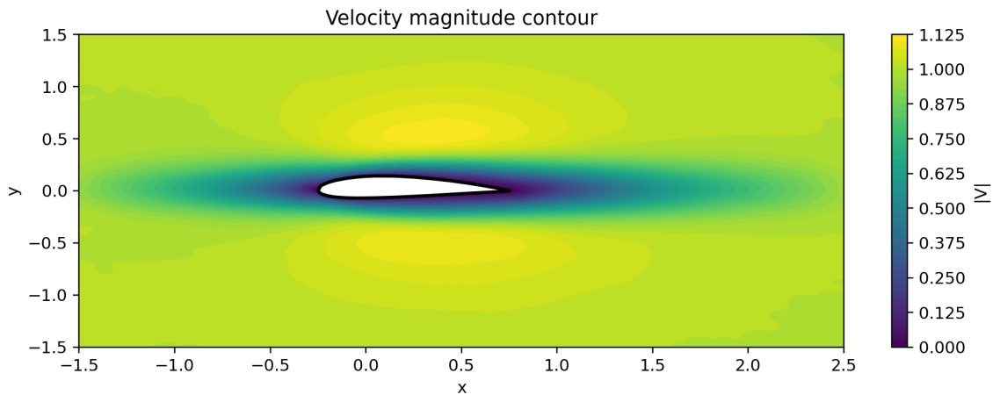
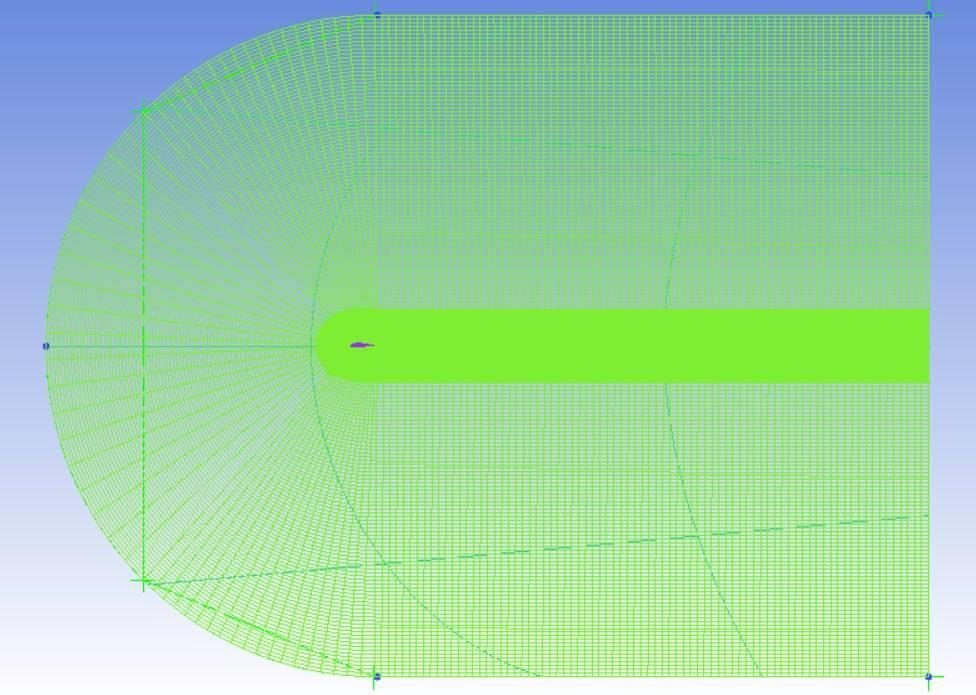
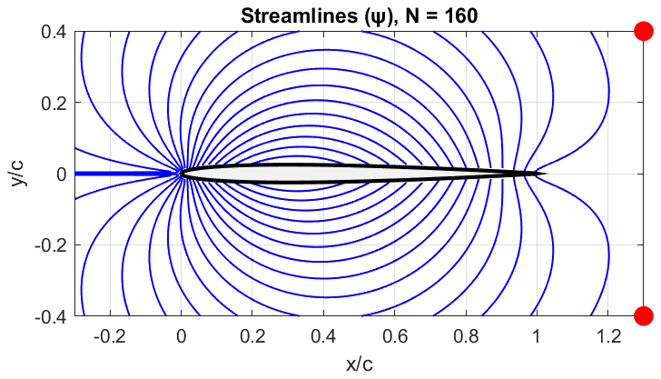

Computational Fluids
Airfoil Flow, Three Methods
The flow around NACA airfoils in four phases: ANSYS Fluent (RANS) with a grid study, two physics-informed neural networks, and a source–sink potential-flow code in MATLAB.

Overview
How do a RANS solver, physics-informed neural networks and a source–sink potential-flow method describe the flow around cambered and symmetric NACA airfoils, and when is each solution independent of its numerical settings?
Approach
- Phase 1: NACA 4421 at Re = 2×10⁶ and 3×10⁶ in ANSYS Fluent on structured C-meshes, with a grid study.
- Phase 2: Navier–Stokes PINN for NACA 4421 at Re = 100, α = 0°, with Fourier features and Sobol sampling.
- Phase 4: PINN for the potential flow around the symmetric NACA 16-006 at α = 5°.
- Phase 5: source–sink distribution for symmetric airfoils of five thicknesses in MATLAB.
Results
| Fluent grid independence, five C-meshes (25 480 → 105 690 cells) | C_L < 0.1 % and C_D ≈ 0.8 % between the two finest grids |
|---|---|
| PINN, NACA 4421 at Re = 100, surface C_p | 1.5 % to 25 % from the experimental data at four chord stations |
| PINN set-up independence | unchanged for n_int ≥ 16 000, width ≥ 128, ≥ 6 hidden layers |
| Source–sink method, symmetric airfoil at α = 0° | C_L, circulation and C_D converge towards zero as the number of sources grows |
| Retained Fluent mesh | 78 950 cells: C_L = 0.497, C_D = 0.0216 |
| PINN network | 6 × 128 tanh MLP, 16 Fourier features |
| PINN training | Adam 30 000 iterations + L-BFGS |
| Source–sink method | 160 sources for the field plots |
From the report





